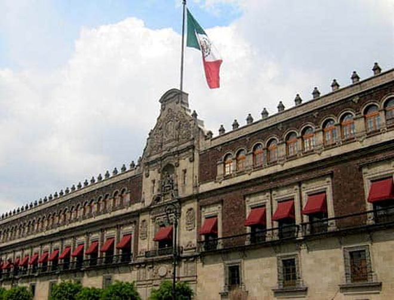
The Palacio Nacional is home to the offices of the president of Mexico but also inside this grandiose colonial palace are some of Diego Rivera's most impressive murals. Two days before our visit, the Palacio had been closed to the public due to the protests outside but luckily, on the day we visited, entrance had been restored. While we waited, we were passed and greeted by some school parties.
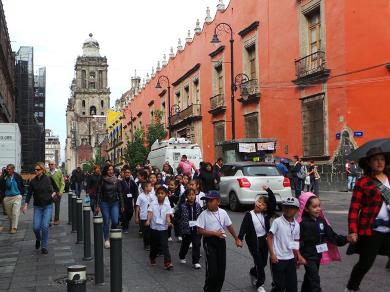
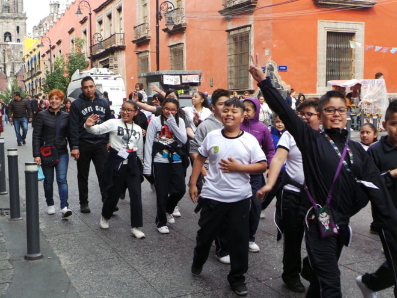
Entering we found a charming cactus garden and a very sweet soldiera who let me snap both her and her shiny boots.
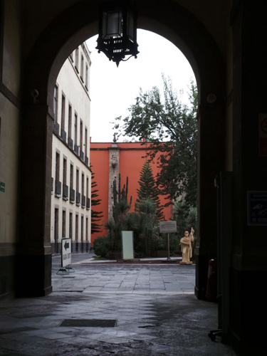
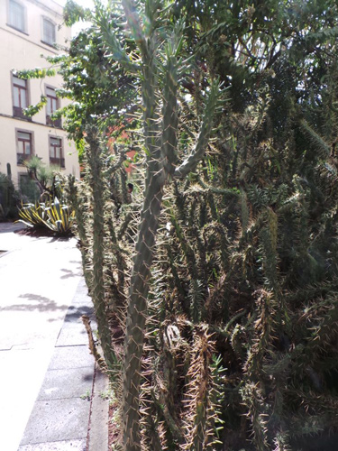
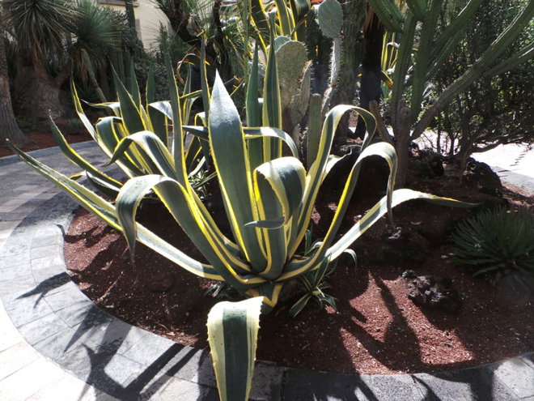
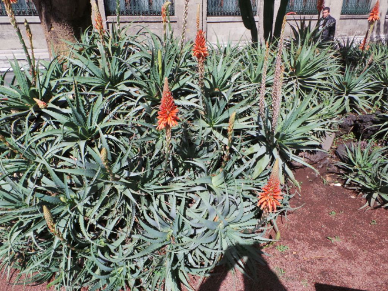
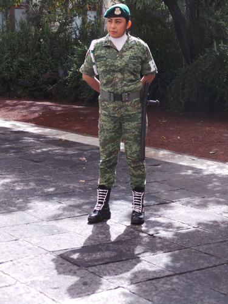
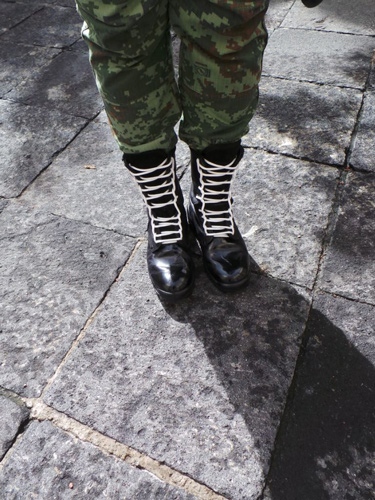
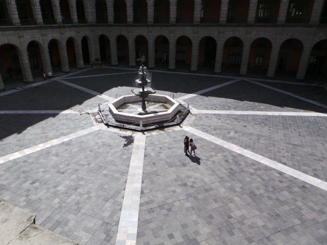
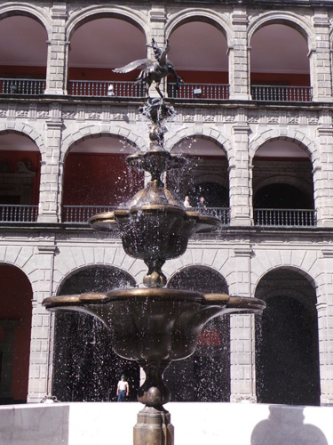
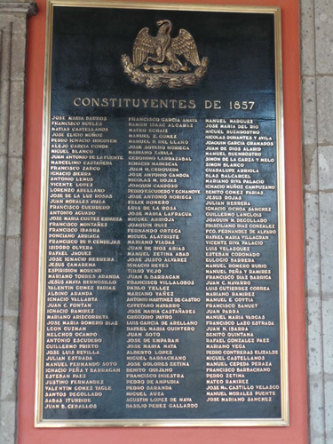
Possibly Diego Rivera's most famous work, The History of Mexico, these fabulous murals were painted between 1929 and 1951 and depict Mexican civilisation from the arrival of Quetzalcóatl (the Aztec plumed-serpent god) to the post-revolutionary period.
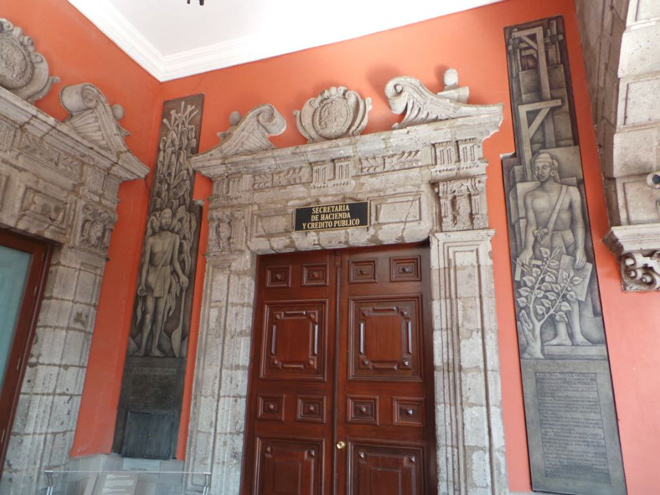
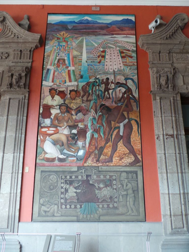
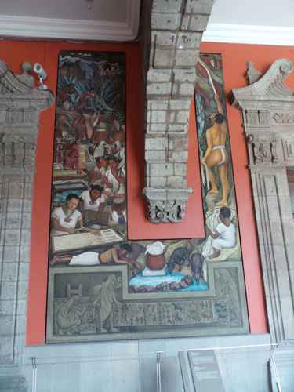
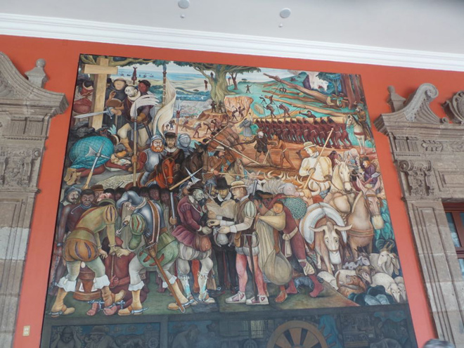
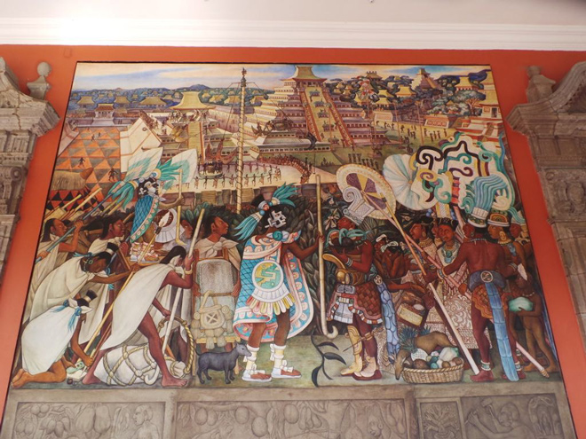
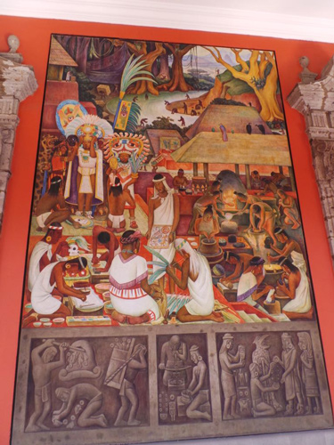
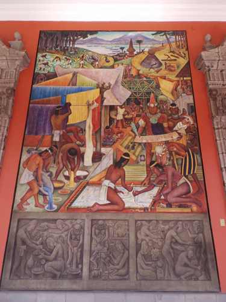
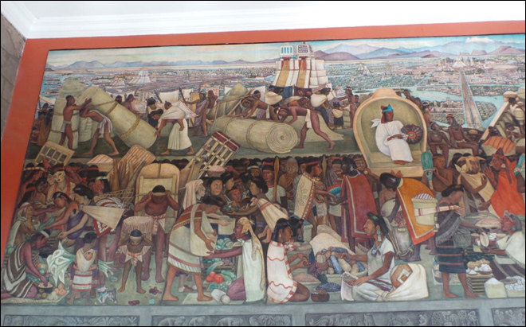
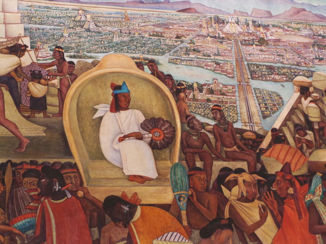
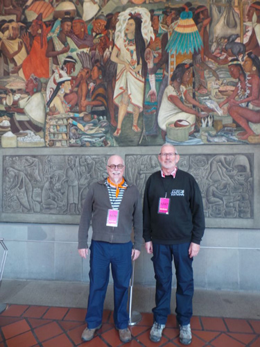
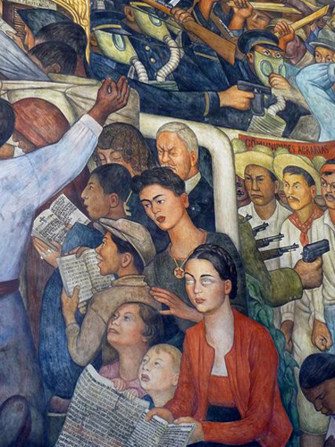
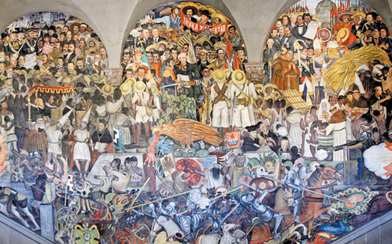
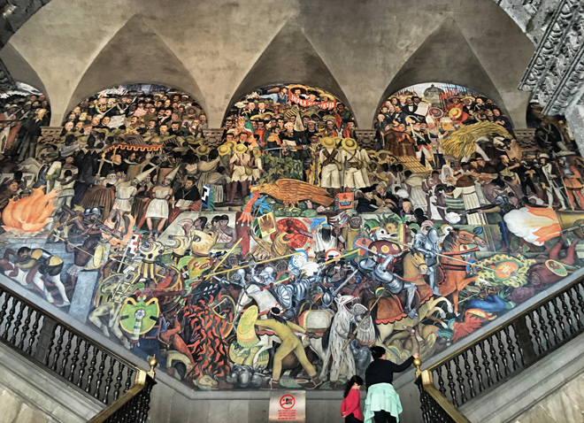
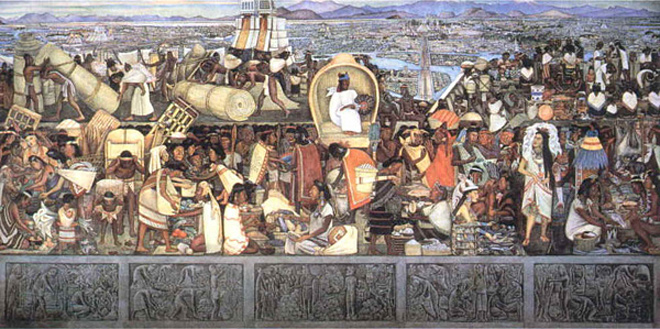
The murals are, in my opinion, a triumph combining elements from Mexican history, social injustice, political upheaval, polemic and an extensive knowledge of art history. Does anyone else see the influence of the paintings of Paolo Uccello in the images of the jousting horsemen? He also features his wife (Frida Kahlo) and various other recognisable figures e.g. Karl Marx.
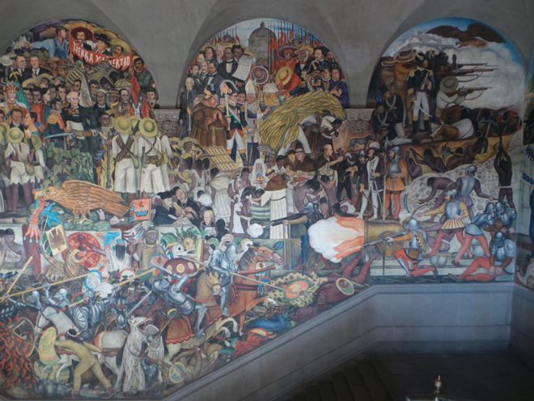
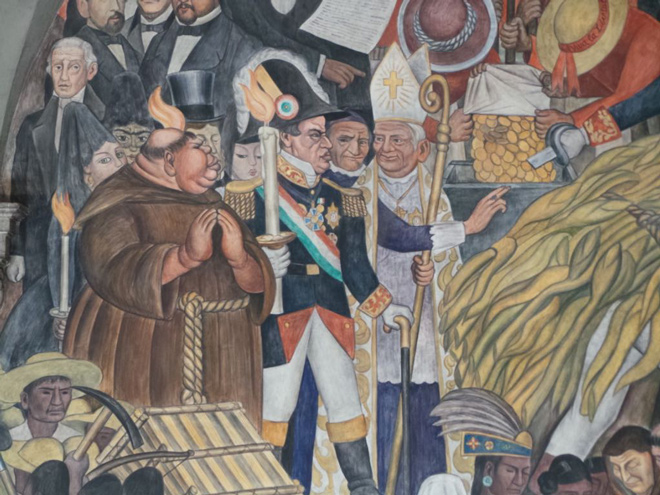
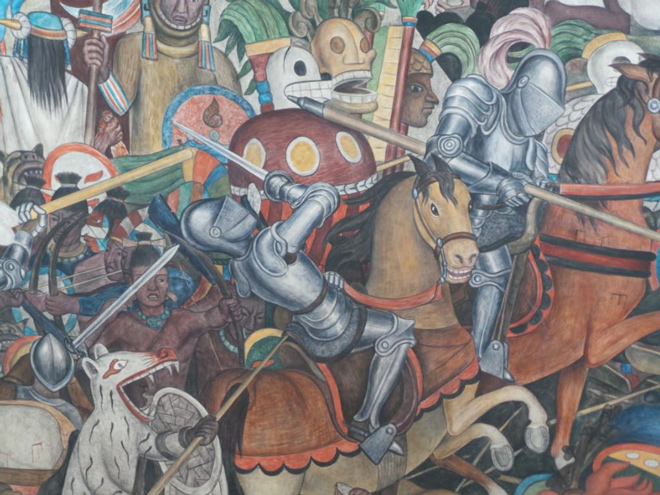
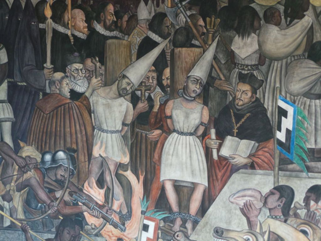
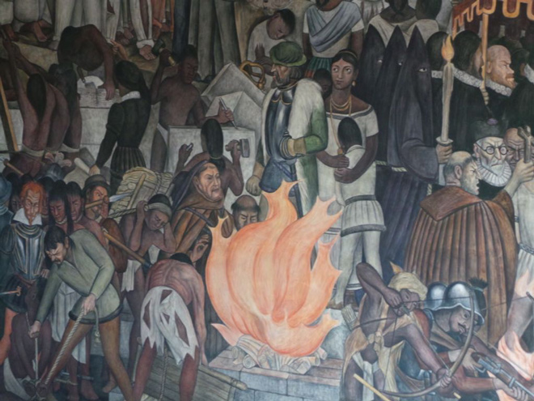
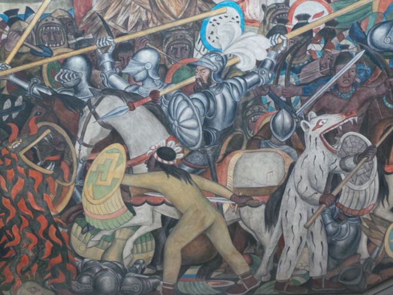
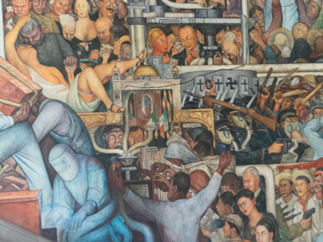
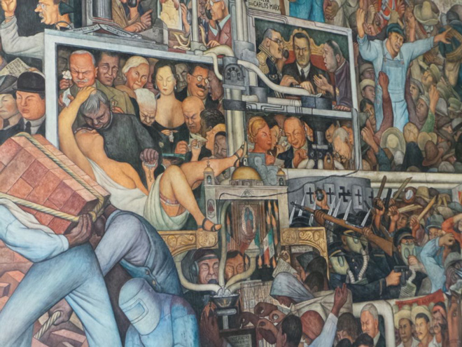
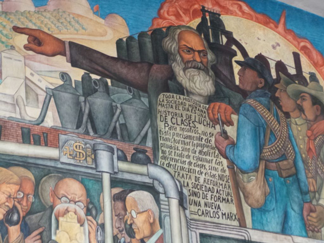
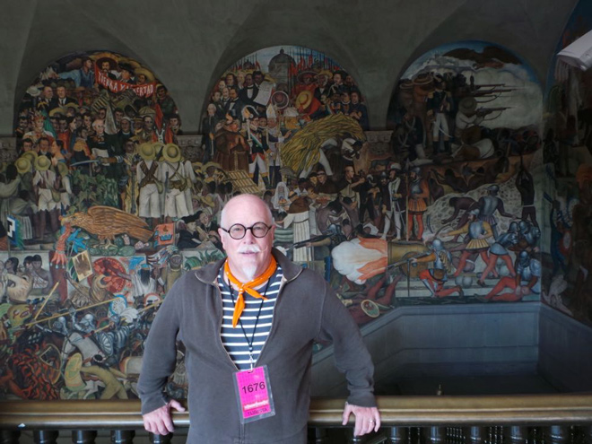